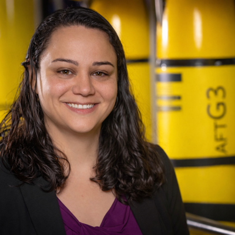

Biological Oceanographer & Marine Biogeochemist
I study how ocean physics shapes marine ecosystems and controls the transfer of carbon to the deep sea. My research uses autonomous platforms—particularly ocean gliders—to observe biophysical interactions and the biological carbon pump in remote and poorly sampled regions.

filipa.carvalho [at] noc.ac.uk
National Oceanography Centre
European Way, Southampton
SO14 3ZH, United Kingdom